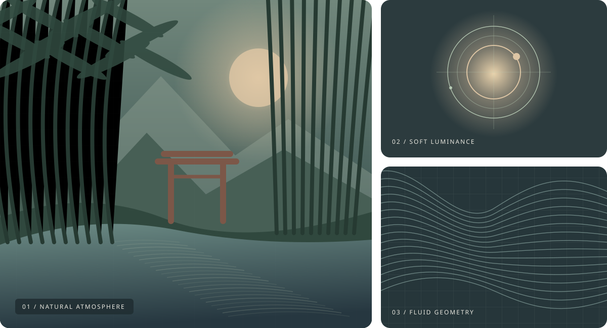
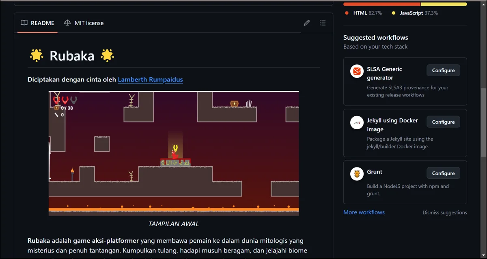

Organik
Hijau redup dan bentuk alami menghadirkan kesan tenang tanpa mendominasi karya.
Bahasa visual yang mempertemukan ketenangan alam, struktur digital, dan interaksi yang terukur. Sistem ini mengutamakan keterbacaan, konsistensi, dan ruang bagi karya.
Studi visual orisinal yang merangkum tiga pendekatan: lanskap alami, cahaya lembut, dan geometri yang mengalir. Ketiganya menjadi acuan untuk nuansa taman 3D, ritme animasi, dan struktur antarmuka.

Hijau redup dan bentuk alami menghadirkan kesan tenang tanpa mendominasi karya.
Pencahayaan amber yang lembut memberi kedalaman visual pada suasana gelap.
Grid, garis, dan pengulangan bentuk menjaga keteraturan dan konsistensi antarmuka.
Warna netral menjadi dasar, hijau sage menandai aksi, dan krem hangat membentuk aksen editorial. Pilihan ini dimaksudkan untuk mengurangi kesan visual yang terlalu mencolok, tanpa mengabaikan kontras.
Abu-abu kebiruan dengan saturasi rendah membangun dasar yang tenang dan memberi ruang bagi karya.
Perbedaan kecerahan yang lembut membantu membedakan lapisan informasi tanpa garis yang berlebihan.
Hijau sage menghubungkan nuansa alam dengan interaksi utama, sekaligus membedakan tombol dari latar.
Krem hangat menyeimbangkan temperatur warna yang dingin dan memberi penekanan pada elemen dekoratif.
Putih gading mempertahankan kontras yang tinggi tanpa memakai putih murni.
Warna netral sekunder menjaga hierarki dan keterbacaan deskripsi.
Krem pucat menjadi alternatif untuk membaca konten dalam lingkungan yang lebih terang.
Hijau gelap memberikan dasar kontras untuk teks pada mode terang.
Nama warna merupakan penamaan editorial. Kode warna bersumber dari token CSS yang digunakan pada portofolio.
Dua keluarga huruf membangun perbedaan antara identitas dan informasi. Judul menggunakan bentuk geometris, sedangkan narasi mengutamakan keterbacaan.
Judul, angka, dan elemen identitas. Bobot 600–700 dengan jarak huruf yang rapat untuk komposisi editorial.
Narasi, navigasi, tombol, dan dokumentasi. Bobot 400–700 dengan jarak baris yang lega.
Desain yang baik membantu pengunjung menemukan informasi tanpa hambatan.
Logo L/R yang telah digunakan pada portofolio menjadi elemen pengenal utama. Sistem visual mempertahankan bentuk logo asli dan menempatkannya pada permukaan netral dengan ruang yang memadai.
Bentuk dan warna logo tidak diubah. Identitas diterapkan secara konsisten pada navigasi, footer, dan dokumentasi.
Contoh komponen memperlihatkan bagaimana warna, tipografi, dan jarak bekerja bersama dalam antarmuka. Kartu karya memberi prioritas pada bukti visual dan navigasi langsung.

Permainan aksi-platformer berbasis browser.
Aksi utama dibedakan melalui sage, sedangkan aksi sekunder memakai garis tepi dan latar transparan.
Ritme jarak rekomendasi: 8, 16, 24, dan 32 px.
Animasi berfungsi untuk memberi konteks, menunjukkan respons, dan menghidupkan suasana. Interaksi singkat tidak menghambat akses ke informasi.
Studi pergerakan partikel dan gelombang.
Umpan balik tombol singkat, sekitar 210 ms pada implementasi saat ini.
Partikel, air, dan kamera bergerak dengan interpolasi waktu pada Canvas dan WebGL.
Animasi dekoratif dapat dihentikan dan mengikuti preferensi reduced motion.
Rasio kontras berikut dihitung dari pasangan token warna aktual menggunakan luminans relatif. Target minimum WCAG AA untuk teks normal adalah 4,5:1.
| Pasangan warna | Pratinjau | Rasio | AA normal |
|---|---|---|---|
| Teks utama · latar gelap | Aa | 11.42:1 | Memenuhi |
| Teks sekunder · latar gelap | Aa | 8.04:1 | Memenuhi |
| Teks tombol · sage | Aa | 7.44:1 | Memenuhi |
| Teks utama · latar terang | Aa | 10.88:1 | Memenuhi |
| Teks sekunder · latar terang | Aa | 5.76:1 | Memenuhi |
| Teks tombol · mode terang | Aa | 5.67:1 | Memenuhi |
Pengujian ini terbatas pada pasangan warna solid yang tercantum, bukan audit aksesibilitas seluruh website. Latar gambar, transparansi, dan perilaku antarmuka perlu diperiksa terpisah.